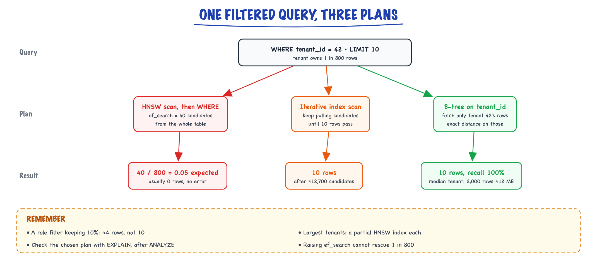

pgvector // Tech & tools
Vector search inside Postgres: HNSW/IVFFlat, hybrid with full-text, operations.
01 — At a glance
PostgreSQL extension for vector similarity search: store embeddings alongside relational data, HNSW/IVFFlat indexes, SQL WHERE filters, JOINs, and ACID transactions. The default when you already run Postgres. Compare with Pinecone, Weaviate, and Chroma in the Vector search & databases.

pgvector in Postgres: vector(1536) column, HNSW index, SQL WHERE tenant filter, JOIN with users/orders in one query. Sweet spot: 100K–10M vectors per instance with read replicas for search QPS.
02 — New words
| Word | Meaning |
|---|---|
| Extension | A package that adds types, functions and index methods to PostgreSQL. pgvector is installed with CREATE EXTENSION vector. |
vector(n) | A column type holding an array of \(n\) 32-bit floats. halfvec(n) stores 16-bit floats, sparsevec sparse vectors, bit(n) binary vectors. |
| Distance operator | An SQL operator that returns the distance between two vectors: <-> Euclidean, <=> cosine distance, <#> negative inner product. |
| Operator class | Tells an index which distance it serves (for example vector_cosine_ops). A query only uses the index if its operator matches. |
| Sequential scan | Postgres reading every row of a table. For vectors, it means exact search: correct but proportional to table size. |
| HNSW index | A graph-based approximate nearest-neighbour index. Good recall and speed; slower to build and larger in memory. |
| IVFFlat index | An index that clusters vectors into lists with k-means and searches only the nearest few lists. Faster to build, smaller, usually lower recall. |
ef_search / probes | Query-time knobs: how many candidates HNSW examines, and how many lists IVFFlat searches. Higher means better recall and slower queries. |
| Iterative index scan | A pgvector feature that keeps pulling candidates from the index until enough rows pass the WHERE clause. |
| Query planner | The part of Postgres that picks how to run a query (which index, which join order) from cost estimates. EXPLAIN shows its choice. |
| Read replica | A copy of the database that receives the primary's changes and serves read queries, adding search capacity. |
| Dead tuple | The old version of an updated or deleted row, left in place until VACUUM reclaims it. |
The lesson
03 — The question
Most applications that add RAG already have a database, and very often it is PostgreSQL. It holds the users, the tenants, the documents and the permissions. Adding a separate vector database means a second system to run, a pipeline to keep it in sync, and a class of bugs where the two disagree: a document deleted in Postgres but still retrievable from the vector store, or a permission revoked in one place and not the other. pgvector removes that by making a vector just another column. Similarity search becomes an SQL query, inside the same transactions, joins and backups as everything else.
Interviewers ask:
- How does pgvector store and search vectors, and what do HNSW and IVFFlat trade off?
- Why can a filtered vector query return fewer rows than asked for, and how do you fix it?
- How do you do hybrid search, and how far does it scale before you need something else?
The running example: a help-desk SaaS already on Postgres, with 800 customer tenants. It is adding an assistant that answers from each tenant's help-centre articles and past tickets: 4 million chunks in total, embedded with a 1,536-dimension model. Tenants are uneven: the average is 5,000 chunks, the median about 2,000, the largest about 400,000. Every query is scoped to one tenant and to the articles the user's role may see.
04 — Step 1: the mental model, a column and an ORDER BY
Everything in pgvector follows from one idea: nearest-neighbour search is a sort. "The 10 chunks closest to this query" is
SELECT id, content FROM chunks WHERE tenant_id = 42 ORDER BY embedding <=> :query_vec -- cosine distance, smallest first LIMIT 10;
Without an index, Postgres computes the distance for every row that passes the WHERE clause, sorts, and returns the top 10: exact search. With a vector index, it can instead ask the index for rows in approximately nearest-first order and stop early: approximate search. The rest of the lesson is about when each happens and what it costs.
Because it is just SQL, the things that are hard in a separate vector store are free here. The permission check can be a join to the article_permissions table in the same query. A deleted article's chunks vanish in the same transaction that deletes the article. A backup of the database is a backup of the index. That consistency is pgvector's real selling point; raw speed is not.
05 — Step 2: types, operators and why the index sometimes is not used
The table for our example:
CREATE EXTENSION IF NOT EXISTS vector; CREATE TABLE chunks ( id bigserial PRIMARY KEY, tenant_id int NOT NULL REFERENCES tenants(id), article_id bigint NOT NULL REFERENCES articles(id) ON DELETE CASCADE, chunk_no int NOT NULL, content text NOT NULL, embedding vector(1536) NOT NULL, UNIQUE (article_id, chunk_no) );
A vector(1536) value takes \(4 \times 1{,}536 + 8 = 6{,}152\) bytes. Across 4 million rows that is about 24.6 GB of vectors before any index. Keep that number; it drives memory sizing later.
Three distance operators matter, and each needs the matching index operator class:
| Operator | Meaning | Index operator class |
|---|---|---|
<-> | Euclidean (L2) distance | vector_l2_ops |
<=> | Cosine distance, \(1 - \cos\) | vector_cosine_ops |
<#> | Negative inner product | vector_ip_ops |
The inner product is negated because Postgres index scans only produce ascending order; negating it makes "largest inner product" come first. If a query orders by <-> but the index was built with vector_cosine_ops, the index is silently ignored and every query becomes a full exact scan. That is the first thing to check with EXPLAIN when vector queries are slow. For embedding models that output unit vectors, cosine, inner product and L2 all rank identically, and inner product is the cheapest to compute.
Indexes on vector support up to 2,000 dimensions. Larger models need halfvec (16-bit floats, indexable up to 4,000 dimensions), which also halves memory: our 24.6 GB becomes about 12.3 GB, usually with a negligible recall change that you should confirm on your golden set.
06 — Step 3: exact search is sometimes the right answer
Before adding an approximate index, notice what the WHERE tenant_id = 42 clause does. With an ordinary B-tree index on tenant_id, Postgres can fetch only tenant 42's rows and compute exact distances for those.
- Median tenant: 2,000 rows × 6 KB ≈ 12 MB of vectors to scan. That is a few milliseconds to tens of milliseconds, and recall is 100%.
- Largest tenant: 400,000 rows × 6 KB ≈ 2.5 GB per query. Far too slow for interactive use.
- No tenant filter at all: 24.6 GB per query. Never acceptable.
So for a multi-tenant application with many small tenants, exact search per tenant is not a fallback; it is often the best plan for most tenants, because it is exact and needs no tuning. Approximate indexes earn their keep for the large tenants and for any query that spans a large share of the table. Postgres's planner makes this choice per query from its statistics, which is convenient and occasionally surprising (Step 6).
07 — Step 4: HNSW, the default approximate index
SET maintenance_work_mem = '32GB'; -- let the graph build in memory SET max_parallel_maintenance_workers = 7; -- parallel build CREATE INDEX chunks_embedding_hnsw ON chunks USING hnsw (embedding vector_cosine_ops) WITH (m = 16, ef_construction = 64); -- the defaults, stated explicitly SET hnsw.ef_search = 100; -- per session or transaction; default 40
HNSW builds a layered graph in which each vector links to up to \(m\) neighbours (twice that on the bottom layer). A search enters at the top, greedily walks toward the query, and on the bottom layer keeps a candidate list of size ef_search, returning the best of those. The general mechanism and its recall curves are explained in vector search; what is specific to Postgres is operational:
- Build memory. The build is much faster when the whole graph fits in
maintenance_work_mem. For our 4 million rows the index is roughly the vectors (24.6 GB) plus links, so a build on a server with too little memory can take many times longer. Build after a bulk load, not row by row, and use parallel workers. - Query memory. For fast queries the index must stay in RAM (Postgres's buffer cache plus the operating system's file cache). If the index is 26 GB and the server has 32 GB shared with everything else, queries hit disk and latency jumps by orders of magnitude.
- Writes. Every insert walks the graph to find its neighbours, so inserts into an HNSW-indexed table are much slower than plain inserts. Batch them, and expect bulk re-embedding to be limited by index maintenance.
ef_searchandLIMIT. The index returns at most aboutef_searchcandidates per scan. Asking forLIMIT 100with the default 40 returns at most about 40 unless you raise it.
08 — Step 5: IVFFlat, the cheaper alternative
IVFFlat runs k-means over the existing vectors to find lists centroids, and assigns each vector to its nearest centroid. A query compares itself with the centroids, then scans exactly the vectors in the nearest probes lists.
A common starting point is lists ≈ rows / 1,000 up to a million rows and ≈ \(\sqrt{\text{rows}}\) above that, with probes ≈ \(\sqrt{\text{lists}}\). For 4 million rows: \(\sqrt{4{,}000{,}000} = 2{,}000\) lists, about 45 probes, so each query scans \(45/2{,}000 = 2.25\%\) of the table, about 90,000 vectors. That is much less work than 4 million, and much more than HNSW typically touches.
The trade-offs against HNSW:
- For IVFFlat: faster to build, smaller, cheaper inserts.
- Against: the centroids are computed once, from the data present at build time. Build it on an empty or tiny table and the lists are meaningless. As new data drifts away from the original distribution, lists become unbalanced and recall falls until you rebuild. And at the same speed, recall is usually lower.
The practical default is HNSW. IVFFlat suits very large tables that are loaded in bulk and rarely change, where build time and memory matter more than the last few points of recall.
09 — Step 6: filtering, where most pgvector bugs live
Here is the failure that surprises nearly every team. With an HNSW index, Postgres runs the filtered query like this: ask the index for about ef_search nearest candidates from the whole table, then apply WHERE tenant_id = 42 to those candidates.
Tenant 42 owns 1 in 800 rows. Of 40 candidates, the expected number belonging to it is \(40/800 = 0.05\). The query asks for 10 rows and almost always returns zero. A softer filter fails more quietly: if a role filter keeps 10% of rows, 40 candidates yield about 4 rows, not 10, and the RAG prompt gets less context with no error anywhere.
The fixes, from simplest:
- Let the planner use the B-tree. For selective filters, an index on
tenant_idplus exact distance over that tenant's rows (Step 3) is both correct and fast. Postgres often chooses this automatically when its statistics say the filter is selective; check withEXPLAIN, and make sureANALYZEhas run. - Iterative index scans (pgvector 0.8 and later):
SET hnsw.iterative_scan = relaxed_ordermakes the scan keep pulling candidates until enough rows pass the filter, up to a configurable limit (hnsw.max_scan_tuples). This fixes the moderate-filter case. For very selective filters it may scan a great deal: in the model below it reads about 12,700 candidates to find 10 rows for a tenant owning 1 in 800 rows. - Partial indexes or partitioning for large tenants: a separate HNSW index per big tenant (
CREATE INDEX ... WHERE tenant_id = 7), or list-partition the table by tenant group so each partition has its own index, and the filter selects the partition before the vector search starts. - Raising
ef_searchhelps a moderate filter at the cost of every query's latency. It cannot rescue a 1-in-800 filter.

Tenant 42 owns 1 row in 800: an HNSW scan followed by the WHERE clause returns almost nothing, an iterative scan finds 10 rows after about 12,700 candidates, and the B-tree on tenant_id gives an exact answer from the tenant's own rows.
For our help desk the combination is: B-tree on tenant_id for exact search on the many small tenants, partial HNSW indexes for the dozen largest, and iterative scans enabled as a safety net for role filters. The model in the code section shows all three behaviours on synthetic data.
10 — Step 7: hybrid search in plain SQL
Help-desk questions contain error codes and product names, which dense vectors blur. Postgres has had full-text search for decades: a tsvector column, a GIN index, and ranking functions. Combining it with vector search is a query with two ranked lists and reciprocal rank fusion: each chunk scores \(\sum 1/(k + \text{rank})\) over the lists it appears in, with \(k = 60\) by convention.
ALTER TABLE chunks ADD COLUMN tsv tsvector GENERATED ALWAYS AS (to_tsvector('english', content)) STORED; CREATE INDEX chunks_tsv ON chunks USING gin (tsv); WITH vec AS ( SELECT id, row_number() OVER (ORDER BY embedding <=> :q_vec) AS r FROM chunks WHERE tenant_id = :t ORDER BY embedding <=> :q_vec LIMIT 50 ), kw AS ( SELECT id, row_number() OVER (ORDER BY ts_rank_cd(tsv, query) DESC) AS r FROM chunks, websearch_to_tsquery('english', :q_text) AS query WHERE tenant_id = :t AND tsv @@ query ORDER BY ts_rank_cd(tsv, query) DESC LIMIT 50 ) SELECT id, SUM(1.0 / (60 + r)) AS rrf FROM (SELECT * FROM vec UNION ALL SELECT * FROM kw) both_lists GROUP BY id ORDER BY rrf DESC LIMIT 10;
Worked: chunk A is 1st by vector and 3rd by keyword: \(1/61 + 1/63 = 0.03227\). Chunk B is 2nd by vector and 1st by keyword: \(1/62 + 1/61 = 0.03252\), so B edges ahead. Chunk C appears only 4th in the keyword list: \(1/64 = 0.0156\). Agreement between the two lists is rewarded; raw score scales never mix. Postgres's built-in ranking is simpler than BM25 (it has no corpus-wide term weighting), which is usually fine for fusion; extensions exist if you need true BM25. Why fusion works is covered in hybrid search.
11 — Step 8: writes, consistency and maintenance
pgvector inherits Postgres's transactional guarantees, which is the property other vector stores most often lack.
- Re-ingesting an article is one transaction: delete its chunks, insert the new ones, commit. A query running at the same time sees either the old version or the new one, never a mix and never both. The
UNIQUE (article_id, chunk_no)constraint plusINSERT ... ON CONFLICT DO UPDATEmakes reruns idempotent. - Deletes are immediate on the primary: once the transaction commits, the next query cannot return the deleted chunks. With
ON DELETE CASCADE, deleting an article removes its chunks automatically, which makes data-deletion requests straightforward. - Replicas lag. If searches run on read replicas, a just-uploaded article may take a moment to appear there. Usually acceptable; route the uploader's own follow-up queries to the primary if not.
- Dead tuples and vacuum. An update or delete leaves the old row version behind, and the HNSW index keeps pointing at it until
VACUUMcleans up. Heavy churn (re-embedding everything nightly) bloats both table and index, and vacuuming a large HNSW index is slow. Re-embed only chunks whose text hash changed, and tune autovacuum for the chunks table.
12 — Step 9: scaling, and when to leave
Capacity in pgvector is mostly a memory question. For our 4 million chunks:
| Choice | Vector data | Effect |
|---|---|---|
vector(1536) | 24.6 GB | Index needs a server with well over 32 GB RAM to stay cached |
halfvec(1536) (column or expression index) | 12.3 GB | Fits comfortably on a 64 GB server alongside the application data |
| Binary-quantised index, re-rank top 100 with full vectors | about 0.8 GB of bit vectors (192 bytes + 8 each), plus graph links | Much smaller and faster first pass; recall depends on the embedding model, so test it |
Query throughput scales with read replicas: each replica holds a full copy of the index, so search load spreads across them while writes stay on the primary. Use a connection pooler, because RAG traffic opens many short connections.
The ceiling arrives when one machine can no longer hold the index in memory, when index builds take longer than your maintenance window, or when vector traffic starts to hurt the transactional workload on the same primary. As an order of magnitude, a well-provisioned server handles tens of millions of vectors; beyond that you are sharding Postgres yourself (by tenant, for example) or moving the vectors to a database designed to distribute them, such as Pinecone or Weaviate. Many teams never reach it.
13 — Choosing pgvector
| Situation | pgvector? | Reason |
|---|---|---|
| Already run Postgres; vectors relate to existing rows (tenants, permissions) | Yes, the default | One system, joins, transactions, one backup |
| Many small tenants, every query scoped to one | Yes | B-tree plus exact search is fast and has perfect recall |
| Hundreds of millions of vectors, high query rate | Probably not alone | Single-node memory and build times become the limit |
| No one on the team operates databases | Use a managed Postgres, or Pinecone | Index memory, vacuum and replicas need attention |
| Need true BM25 and hybrid in one call with no SQL | Possible, more work | Weaviate has it built in |
| Prototype in a notebook | Fine if Postgres is handy | Chroma is quicker to start |
14 — In code: the application side, and a model of the filter problem
# Not run here: needs PostgreSQL with pgvector, `pip install psycopg pgvector`. Written against their documented APIs (2025). import numpy as np import psycopg from pgvector.psycopg import register_vector with psycopg.connect("dbname=helpdesk") as conn: register_vector(conn) # numpy arrays <-> vector columns with conn.transaction(): # re-ingest one article atomically conn.execute("DELETE FROM chunks WHERE article_id = %s", (article_id,)) with conn.cursor() as cur: cur.executemany( "INSERT INTO chunks (tenant_id, article_id, chunk_no, content, embedding) " "VALUES (%s, %s, %s, %s, %s)", [(tenant_id, article_id, i, text, np.asarray(vec, dtype=np.float32)) for i, (text, vec) in enumerate(chunk_rows)]) conn.execute("SET hnsw.iterative_scan = relaxed_order") # safety net for filters rows = conn.execute( "SELECT c.id, c.content, c.embedding <=> %s AS dist " "FROM chunks c JOIN article_permissions p ON p.article_id = c.article_id " "WHERE c.tenant_id = %s AND p.role = %s " "ORDER BY c.embedding <=> %s LIMIT 10", (q_vec, tenant_id, role, q_vec)).fetchall()
The filter problem from Step 6, runnable with numpy. The sorted distance list stands in for the index's nearest-first stream.
import numpy as np rng = np.random.default_rng(0) n, dim, tenants = 100_000, 64, 800 X = rng.normal(size=(n, dim)).astype(np.float32) X /= np.linalg.norm(X, axis=1, keepdims=True) tenant = rng.integers(0, tenants, size=n) # ~125 rows per tenant q = X[123] + 0.5 * rng.normal(size=dim).astype(np.float32) q /= np.linalg.norm(q) dist = 1 - X @ q # cosine distance, like the <=> operator order = np.argsort(dist) # stand-in for the index's nearest-first stream want, t = 10, 7 truth = [i for i in order if tenant[i] == t][:want] # exact answer: filter, then rank # 1. index scan of ef_search=40 candidates, THEN the WHERE clause ef_search = 40 post = [i for i in order[:ef_search] if tenant[i] == t] print(f"post-filter, ef_search={ef_search}: {len(post)} rows returned") # 2. iterative scan: keep pulling candidates until enough rows pass the filter pulled, got = 0, [] while len(got) < want and pulled < n: batch = order[pulled:pulled + ef_search]; pulled += ef_search got += [i for i in batch if tenant[i] == t] print(f"iterative scan: {len(got[:want])} rows after scanning {pulled} candidates") # 3. B-tree on tenant_id, then exact distance over that tenant's rows only rows = np.flatnonzero(tenant == t) exact = rows[np.argsort(dist[rows])][:want].tolist() print(f"tenant rows scanned exactly: {len(rows)}; matches truth: {exact == truth}")
It prints 0 rows for the post-filter plan, 10 rows after scanning 12,720 candidates for the iterative scan, and an exact answer from scanning only the tenant's 116 rows: the three behaviours from Step 6, and the reason small tenants are best served by the B-tree.
Quick reference
15 — What & Why
pgvector adds a vector column type and distance operators to PostgreSQL. Instead of syncing embeddings to a separate vector SaaS, you store vectors in the same database as users, documents, permissions, and orders — with full SQL, transactions, and JOINs.
Functional requirements
- Store fixed-dimension embeddings in
vector(n)columns - Search by cosine, L2, or inner product distance
- Filter with standard SQL WHERE (tenant, ACL, date)
- JOIN embeddings with relational tables in one query
- Index with HNSW or IVFFlat for sub-linear ANN search
Non-functional requirements
- Latency: p99 < 50 ms for top-k=20 at 1–5M vectors with HNSW + tuned
ef_search - Consistency: ACID upserts — vector + metadata in same transaction
- Scale: ~1–10M vectors per instance (RAM-bound HNSW); read replicas for QPS
- Ops: Standard Postgres backup, replication, PgBouncer — team already knows this
Prerequisite: Vector search & databases and Choosing an embedding model metric choice — use vector_cosine_ops for OpenAI-style cosine embeddings.
16 — Core Concepts
| Term | Definition | Gotcha |
|---|---|---|
| vector(n) | Fixed-size float array column type. | Dimension n fixed; model change = new column/table. |
| <=> | Cosine distance operator. | Requires vector_cosine_ops index class. |
| <-> | L2 (Euclidean) distance. | Use vector_l2_ops if model uses L2. |
| <#> | Negative inner product. | For normalized vectors, equals cosine. |
| HNSW | Graph ANN index (PG 16+ native). | RAM hungry; tune m, ef_construction, ef_search. |
| IVFFlat | Cluster-based ANN; lower RAM. | Needs ANALYZE; tune lists and probes. |
| ef_search | Query-time HNSW beam width (session GUC). | Higher = better recall, slower queries. |
| Halfvec | FP16 vector type (pgvector 0.7+). | Half RAM; slight recall loss — test on golden set. |
17 — API / Interface Surface
Setup
CREATE EXTENSION vector;
CREATE TABLE document_chunks (
id BIGSERIAL PRIMARY KEY,
doc_id UUID NOT NULL,
tenant_id TEXT NOT NULL,
chunk_idx INT NOT NULL,
content TEXT NOT NULL,
embedding vector(1536) NOT NULL,
metadata JSONB DEFAULT '{}',
created_at TIMESTAMPTZ DEFAULT now(),
UNIQUE (doc_id, chunk_idx)
);
CREATE INDEX idx_chunks_tenant ON document_chunks (tenant_id);
CREATE INDEX idx_chunks_hnsw ON document_chunks
USING hnsw (embedding vector_cosine_ops)
WITH (m = 16, ef_construction = 128);
Query (retrieve)
SET hnsw.ef_search = 100;
SELECT id, content, metadata,
embedding <=> $1::vector AS distance
FROM document_chunks
WHERE tenant_id = $2
AND metadata->>'doc_type' IN ('policy', 'faq')
ORDER BY embedding <=> $1::vector
LIMIT 20;
Upsert (idempotent ingest)
INSERT INTO document_chunks (doc_id, tenant_id, chunk_idx, content, embedding, metadata) VALUES ($1, $2, $3, $4, $5::vector, $6) ON CONFLICT (doc_id, chunk_idx) DO UPDATE SET content = EXCLUDED.content, embedding = EXCLUDED.embedding, metadata = EXCLUDED.metadata;
18 — When to Use / When NOT
| Scenario | Use pgvector | Alternative |
|---|---|---|
| Already on Postgres | Yes — no new infra | Pinecone adds cost + sync |
| JOIN vectors with users/ACL | Yes — killer feature | Dual-write to vector SaaS |
| <10M vectors, moderate QPS | Yes + read replicas | Dedicated vector DB |
| 100M+ vectors, hyperscale QPS | Shard or migrate | Pinecone, Milvus |
| Native hybrid BM25+vector one call | Manual FTS + RRF | Weaviate |
| Local notebook / CI | Overkill | Chroma |
| Zero Postgres ops team | Risky | Managed Pinecone |
19 — Architecture
App ──write──► Postgres Primary (chunks + users + orders)
App ──search──► Postgres Read Replica(s)
├── B-tree: tenant_id, doc_id
└── HNSW: embedding vector_cosine_ops
pgvector shines when the retrieval query needs relational context — e.g. JOIN user_doc_access to enforce ACL in the same query as vector search.
20 — Deep Dive: HNSW Index
HNSW is the default ANN index for pgvector in production (PostgreSQL 16+). See Vector search & databases for graph traversal theory.
| Parameter | Scope | Starting point |
|---|---|---|
| m | Index build (CREATE INDEX) | 16 (32 if RAM allows, better recall) |
| ef_construction | Index build quality | 128–256 |
| ef_search | Per-query (SET or transaction) | 40–100; increase until recall@10 ≥ 0.92 |
Build without blocking writes
CREATE INDEX CONCURRENTLY idx_chunks_hnsw ON document_chunks USING hnsw (embedding vector_cosine_ops) WITH (m = 16, ef_construction = 128);
- Monitor index size vs
shared_buffers— HNSW should fit in RAM for best latency - After bulk delete, run VACUUM; consider REINDEX if bloat severe
- Compare recall vs brute-force on 1K sample before trusting defaults

HNSW tuning: m and ef_construction at build time; ef_search at query time via SET hnsw.ef_search = 100. Profile recall@k vs p99 before production cutover.
21 — Deep Dive: SQL Patterns
ACL JOIN pattern
SELECT c.id, c.content, c.embedding <=> $1 AS distance FROM document_chunks c JOIN user_doc_access a ON a.doc_id = c.doc_id WHERE a.user_id = $2 AND c.tenant_id = $3 ORDER BY c.embedding <=> $1 LIMIT 20;
Partition by tenant (large scale)
CREATE TABLE document_chunks (
...
) PARTITION BY LIST (tenant_id);
CREATE TABLE chunks_acme PARTITION OF document_chunks
FOR VALUES IN ('acme');
Distance threshold (quality gate)
SELECT * FROM ( SELECT id, content, embedding <=> $1 AS distance FROM document_chunks WHERE tenant_id = $2 ORDER BY embedding <=> $1 LIMIT 20 ) sub WHERE distance < 0.35; -- cosine distance cutoff
Interview tip: SQL WHERE on tenant_id uses B-tree; combined with HNSW index scan — this is pgvector’s pre-filter advantage over post-filter in app code. Same lesson as Vector search & databases.

SQL-native retrieval: WHERE tenant filter + JOIN ACL table + ORDER BY cosine distance. One round trip — no sync to external vector store.
22 — IVFFlat
IVFFlat partitions vectors into lists clusters. At query time, probe nearest centroids — lower RAM than HNSW at large N, but needs tuning. See Vector search & databases.
CREATE INDEX idx_chunks_ivf ON document_chunks USING ivfflat (embedding vector_cosine_ops) WITH (lists = 100); -- After index build, required: ANALYZE document_chunks; SET ivfflat.probes = 10; -- increase for better recall
| When IVFFlat | When HNSW |
|---|---|
| RAM constrained, N > 10M | Default for RAG < 10M |
| Can train on representative sample | Want best out-of-box recall |
| Accept probes tuning burden | Want simpler query tuning (ef_search only) |
23 — Hybrid with Full-Text Search
pgvector does not fuse BM25 + vector natively like Weaviate. Combine Postgres full-text search with vector retrieval:
| Approach | How |
|---|---|
| Dual query + RRF | ts_rank FTS top-50 + vector top-50 → reciprocal rank fusion in app |
| ParadeDB | Postgres extension with BM25 + pgvector unified query |
| Weighted SQL | Normalize ts_rank and distance; linear combine (fragile) |
-- FTS leg
SELECT id, ts_rank(search_vector, plainto_tsquery('english', $1)) AS rank
FROM document_chunks
WHERE search_vector @@ plainto_tsquery('english', $1)
ORDER BY rank DESC LIMIT 50;
-- Vector leg (separate query) → RRF merge in application
See Hybrid search & query understanding for RRF formula and reranker stage.
24 — pgvector vs Pinecone vs Weaviate vs Chroma
| pgvector | Pinecone | Weaviate | Chroma | |
|---|---|---|---|---|
| SQL / JOINs | Yes | No | No | No |
| ACID | Yes | Eventual | Varies | No |
| Hybrid | FTS + manual fusion | Sparse-dense | Native alpha | Limited |
| Ops | Postgres you run | Managed | K8s / cloud | Embedded |
| Sweet spot | 100K–10M, PG shops | 10M+, zero ops | Hybrid-native | Dev <500K |
Full matrix: Vector search & databases.
In production
25 — Production & Ops
| Concern | Practice |
|---|---|
| Connection pooling | PgBouncer transaction mode; separate pool for search replicas |
| Read replicas | Route ANN queries to replicas; writes to primary |
| Index build | CREATE INDEX CONCURRENTLY; monitor progress |
| VACUUM | After bulk delete; tune autovacuum for high churn |
| Backup | Standard pg_dump / WAL — vectors are regular columns |
| Monitoring | pg_stat_user_indexes, query p99, ef_search setting in logs |
| Model upgrade | New table or column; backfill; CONCURRENTLY index; cutover |
27 — Where people get lost
- Wrong ops class: L2 index with cosine embeddings — ranking broken.
- No ANN index: sequential scan timeout at 100K+ rows.
- ef_search too low: recall cliffs on tail queries — always golden-eval.
- Huge content in vector table: bloats heap; store pointer, fetch text separately.
- Search on primary under load: ANN QPS competes with OLTP — use replicas.
- IVFFlat without ANALYZE: poor cluster stats — bad recall.
- Mixing embed models in one column after partial migration.
- Index built with one operator class, query using another. The index is ignored and every query becomes a full scan. Match
vector_cosine_opswith<=>, and checkEXPLAIN. - "LIMIT 10 returns 10." With an HNSW scan followed by a selective
WHERE, it can return 0. Use the B-tree path, iterative scans, or per-tenant indexes. - Building IVFFlat on an empty table. The centroids come from the data present at build time. Load first, then build, and rebuild as data drifts.
- Too little memory. An HNSW index that does not fit in RAM turns millisecond queries into disk-bound ones. Size the server to the index, or use
halfvec. - Forgetting
ef_searchcaps results.LIMIT 100with the default 40 returns about 40. Raise it for large limits. - Re-embedding everything nightly. It bloats table and index with dead tuples and makes vacuum slow. Re-embed only changed text.
- "pgvector is a toy compared with real vector databases." At millions of vectors with good memory sizing it is fast, and it is the only option here with transactional consistency between vectors and application data.
28 — How this connects
Builds on
- Choosing an embedding model — Model families, dimensions, benchmarks, cost, and when to fine-tune or switch.
- Vector search & databases — Exact and approximate nearest neighbours, HNSW and IVF, and choosing a vector database.
- The RAG pipeline — Retrieve, augment, generate: every stage from a question to a grounded, cited answer.
- Chunking — Fixed, recursive, semantic, document-aware and parent-child chunking, and how to tune it.
- Hybrid search & query understanding — BM25 plus vectors fused with RRF, query rewriting, decomposition and HyDE.
- Reranking — Cross-encoder rerankers: retrieve wide, rescore, keep the best few.
Where this shows up later
- Pinecone — Managed serverless vector database: namespaces, metadata filters, hybrid.
- Weaviate — Open-source vector database with modules, hybrid search and multi-tenancy.
- Chroma — Lightweight embedded vector store for prototypes and local RAG.
- Complete build: spec & architecture — The system we build end to end: requirements, architecture and decisions.
- Complete build: the knowledge layer — Ingestion, chunking, indexing and retrieval for the build.
29 — Check yourself
A role filter keeps 5% of rows. With the default ef_search of 40 and no iterative scan, about how many rows does LIMIT 10 return?
ef_search, or restructure so the filter is applied before the vector search.How much memory do the vectors of 10 million 1,024-dimension chunks need as vector, and as halfvec?
vector; about half, roughly 20.5 GB, as halfvec. Plus index links and headroom for the rest of the database.For an IVFFlat index on 9 million rows, suggest lists and probes, and the share of rows each query scans.
Chunk X ranks 3rd by vector and 2nd by keyword; chunk Y ranks 1st by vector and does not appear in the keyword list. Which wins under RRF with \(k = 60\)?
Vector queries were fast yesterday and take seconds today, with no code change. What do you check?
EXPLAIN: did the planner switch from the index to a sequential scan (stale statistics, a changed operator, a new filter)? Memory: has the index grown past what stays cached? Bloat: did a mass update create dead tuples that vacuum has not cleaned? Also check replica lag if reads moved.Your product needs a deleted help-centre article to be unretrievable the moment the delete returns. Pinecone or pgvector, and why?
ON DELETE CASCADE removing chunks), and every later query on the primary cannot see them. An eventually consistent service would need extra handling, such as filtering against your own database at query time.Why is the inner-product operator negative?
Why pgvector over Pinecone?
HNSW vs IVFFlat in pgvector?
How filter by tenant in pgvector?
WHERE tenant_id = $1 before ORDER BY embedding <=> $query. B-tree on tenant_id combines with HNSW index scan — true pre-filter, not post-filter in app.